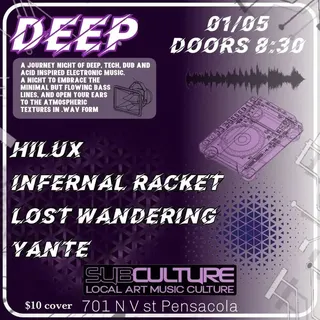

Lost Wandering
on tourtouring / out-of-town dj
6 shows logged
on the record since October 2022, first seen at easy going gallery on a bill with kvbm and skiz. most recently at handlebar, July 2026.
- first loggedOct 1, 2022 · easy going gallery
- most played atsubculture ×4 shows
- busiest year2025 · 2 shows
- biggest lineup13 acts · Dec 2024
- most shared bills withskiz ×3 bills shared
flyer wall
 Jul 3, 2026 · handlebar
Jul 3, 2026 · handlebar May 24, 2025 · subculture
May 24, 2025 · subculture Jan 24, 2025 · subculture
Jan 24, 2025 · subculture Dec 7, 2024 · subculture
Dec 7, 2024 · subculture
Jan 5, 2024 · subculture Oct 1, 2022 · easy going gallery
Oct 1, 2022 · easy going gallerypast shows
- 2026
- 3Jul 2026Lost Wanderinghandlebar
- 2025
- 24May 2025Indobeats, Skiz, Wasabi Jackson, Miatropolis, Yante, Lost Wanderingsubculture
- 24Jan 2025Lost Wandering, Noxious, Dj Brody, Spence Bsubculture
- 2024
- 7Dec 2024Anoe, Bowser, Cam The Sella, Cole Trickle, Fifth Density, Hypnoz, Infernal Racket, Lost Wandering, Skiz, Skribble, Spicy Ashaan, Wub Control, Yantesubculture
- 5Jan 2024Hilux, Infernal Racket, Lost Wandering, Yantesubculture
- 2022
- 1Oct 2022Kvbm, Skiz, Phunk, Lost Wanderingeasy going gallery
shared bills with
skiz ×3yante ×3infernal racket ×2anoebowsercam the sellacole trickledj brodyfifth densityhiluxhypnozindobeats
act pages are built automatically from the show archive, so something may be off: a misspelled name, a missing link, the wrong type, or a bad local/touring call. no disrespect meant. wrong on any of that, or want a listen link (youtube or bandcamp) or live footage added? send it in.